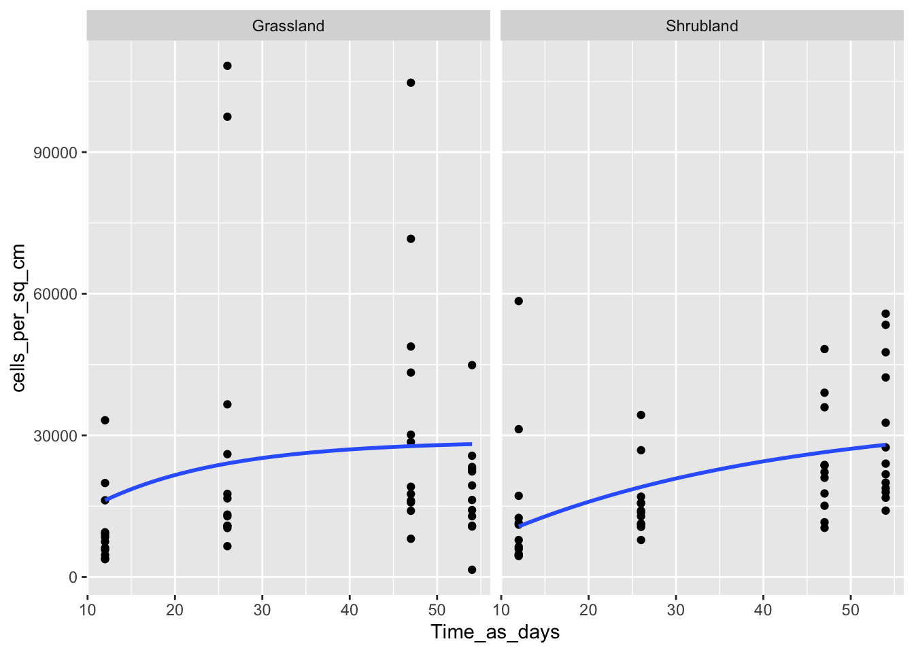
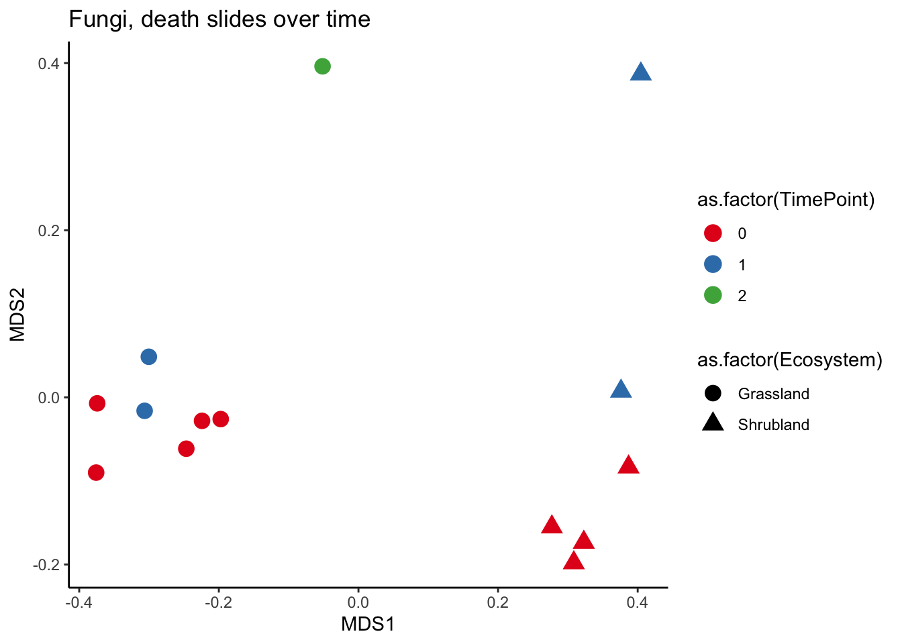

Question_1__characterizing_dispersal
Kendra E. Walters
2021-06-14
Purpose
To answer our first overarching question for the landscape dispersal project: Is the rate and composition of microbial dispersal into the soil surface spatially heterogeneous?
Because vegetation appears to be a primary route through which bacteria disperse, we hypothesized that the taxa dispersing and their dispersal rate onto the soil surface will differ between two ecosystems. In fact, we know that bacterial abundance and composition in one grassland and CSS plant litter differs.
library(knitr)
library(tidyverse)
library(data.table)
library(kableExtra)
require(ggplot2)
require(gridExtra)
library(car)
require(vegan)
require(magrittr)
library(indicspecies)
require(pairwiseAdonis)
require(conflicted)
conflict_prefer("select", "dplyr")
conflict_prefer("filter", "dplyr")
knitr::opts_knit$set(root.dir = "../")
knitr::opts_chunk$set(comment="", cache=T, warning = F, message = F, fig.path = "05_output_figures/")Abundance on glass slides
First, we’ll look at the abundances on the glass slides over time to see if they are acculumulating or at equilibrium.
# Load the data
load("03_Processed_data/flow_cytometry_cleaned.rda")
load("03_Processed_data/metadata_cleaned.rda")
# Left join fights me unless both columns are the same data type
metadata.together$`Random_#_Flow` <- as.character(metadata.together$`Random_#_Flow`)
# Set up a key to change time point into # of days
days.key <- c("0" = 0, "1" = 12, "2" = 26, "3" = 47, "4" = 54)
# Clean up our data to just be what we need for this analysis
cell.counts.use <- cleaned.cell.counts %>% left_join(metadata.together) %>% # combine with metadata using Random_#_Flow
mutate(Treatment = ifelse(is.na(Treatment), "Death", Treatment)) %>% # add metadata for T0 samples that weren't included in the overall metadata file
mutate(Time_Point = ifelse(is.na(Time_Point), 0, Time_Point)) %>%
mutate(Ecosystem = ifelse(grepl("^g", `Random_#_Flow`), "Grassland",
ifelse(grepl("^s", `Random_#_Flow`), "Shrubland", Ecosystem))) %>%
select(number_cells_on_glass_slide_cleaned, Treatment, Ecosystem, Time_Point) %>% # reduce to only columns we need
filter(Treatment != "Closed") %>% # remove this negative control (should have been removed prior to this script)
mutate(Time_as_days = days.key[as.character(Time_Point)]) %>% # make column that lists # of days
mutate(cells_per_sq_cm = number_cells_on_glass_slide_cleaned / (7.5 * 2.5))
# Plot this as a boxplot to give a general sense of what the abundance on the glass slides are doing
ggplot(data = cell.counts.use %>% filter(Treatment == "Open")) +
geom_boxplot(aes(x = as.factor(Time_Point), y = cells_per_sq_cm)) +
facet_wrap(vars(Ecosystem))
Immigration rate calculations assuming population growth
Okay, seems like the immigration rate is faster than the death rate for the first three timepoints, and then a plateau is potentially being reached. We can model this increase and plateau using the integral of our population “growth” equation (with just immigration and death).
dn/dt = i - d*n(t) where n = abundance on glass slides, i = immigration rate, and d = death rate
So the integral is (when forced to go through the origin): n(t) = i/d * (1 - e^(-d*t))
# plotting our data with our fancy integral equation going through the origin
ggplot(data = cell.counts.use %>% filter(Treatment == "Open") %>%
mutate(Time_as_days= as.integer(Time_as_days)),
aes(x = Time_as_days, y = cells_per_sq_cm)) +
geom_point() +
geom_smooth(method = "nls", formula = "y ~ (Im / d) * (1 - exp(-d * x))", se=F,
method.args = list(start=c(Im=2e5, d=0.034))) +
facet_wrap(vars(Ecosystem)) 
# Separate into our two ecosystems
grass.cells <- cell.counts.use %>% filter(Ecosystem == "Grassland")
shrub.cells <- cell.counts.use %>% filter(Ecosystem == "Shrubland")
# Calculating the death rate and immigration rate coefficients
(nls.shrub <- nls(cells_per_sq_cm ~ Im/d * (1 - exp(-d * Time_as_days)),
data = shrub.cells[shrub.cells$Treatment == "Open", ],
start = list(Im = 2e5, d = 0.034)) %>% summary)
Formula: cells_per_sq_cm ~ Im/d * (1 - exp(-d * Time_as_days))
Parameters:
Estimate Std. Error t value Pr(>|t|)
Im 1.068e+03 3.765e+02 2.836 0.00676 **
d 3.097e-02 2.036e-02 1.521 0.13499
---
Signif. codes: 0 '***' 0.001 '**' 0.01 '*' 0.05 '.' 0.1 ' ' 1
Residual standard error: 13000 on 46 degrees of freedom
Number of iterations to convergence: 6
Achieved convergence tolerance: 6.089e-06(nls.grass <- nls(cells_per_sq_cm ~ Im/d * (1 - exp(-d * Time_as_days)),
data = grass.cells[grass.cells$Treatment == "Open", ],
start = list(Im = 2e5, d = 0.034)) %>% summary)
Formula: cells_per_sq_cm ~ Im/d * (1 - exp(-d * Time_as_days))
Parameters:
Estimate Std. Error t value Pr(>|t|)
Im 1.990e+03 1.255e+03 1.586 0.120
d 6.901e-02 5.500e-02 1.255 0.216
Residual standard error: 24190 on 46 degrees of freedom
Number of iterations to convergence: 18
Achieved convergence tolerance: 6.225e-06# note: use summary(model) to look at standard error, which is HUGE for the death rate and fairly large for the immigration rateBut we don’t actually need to have the model guess what the death rate is because we measured death rate with our death rate glass slides. So let’s plot that data now and calculate our death rate for the grassland and shrubland.
# Calculating death rate for the grassland death slides
intercept.grass <- grass.cells %>%
filter(Treatment == "Death",
Time_as_days == 0) %>%
summarize(mean = mean(log(cells_per_sq_cm))) %>% pull(mean)
r.grass <- lm(I(log(cells_per_sq_cm) - intercept.grass) ~ Time_as_days + 0,
grass.cells %>% filter(Treatment == "Death")) %>% coef*-1 # THIS IS THE DEATH RATE!! (we do negative because this is actually describing the continuous rate at which cells survive, not the continuous rate at which cells die)
print(paste0("Continuous death rate for grassland cells is ", round(r.grass, 4), "."))[1] "Continuous death rate for grassland cells is 0.0311."print(paste0("Daily death rate for grassland cells is " , round(-100*(1 - exp(r.grass * 1)), 2), "% per day."))[1] "Daily death rate for grassland cells is 3.16% per day."# Calculating death rate for the grassland death slides
intercept.shrub <- shrub.cells %>%
filter(Treatment == "Death",
Time_as_days == 0) %>%
summarize(mean = mean(log(cells_per_sq_cm))) %>% pull(mean)
r.shrub <- lm(I(log(cells_per_sq_cm) - intercept.shrub) ~ Time_as_days + 0,
shrub.cells %>% filter(Treatment == "Death")) %>% coef*-1 # THIS IS THE DEATH RATE!! (we do negative because this is actually describing the continuous rate at which cells survive, not the continuous rate at which cells die)
print(paste0("Continuous death rate for shrubland cells is ", round(r.shrub, 4), "."))[1] "Continuous death rate for shrubland cells is 0.0237."print(paste0("Daily death rate for grassland cells is " , round(-100*(1 - exp(r.shrub * 1)), 2), "% per day."))[1] "Daily death rate for grassland cells is 2.4% per day."# creating a mini data frame to give our parameters for the linear models (since we are picky about our intercepts here)
lm.parameters.death <- data.frame("Intercept" = c(intercept.grass, intercept.shrub),
"Slope" = c(r.grass[[1]], r.shrub[[1]]),
"Ecosystem" = c("Grassland", "Shrubland"))
# plotting our death rate data
ggplot(data = cell.counts.use %>% filter(Treatment == "Death") %>%
mutate(Time_as_days= as.integer(Time_as_days)),
aes(x = Time_as_days, y = log(cells_per_sq_cm))) +
geom_point() +
geom_abline(data = lm.parameters.death, aes(intercept = Intercept, slope = -Slope)) +
facet_wrap(vars(Ecosystem))Sweet! Now we can use these death rates to input into our model so we are only asking it to find the estimate for the immigration rate. Note how much smaller the standard errors are for these immigration rates!
# Calculating the death rate and immigration rate coefficients WITH measured death rates
(nls.shrub <- nls(cells_per_sq_cm ~
Im/0.02372169 * (1 - exp(-0.02372169 * Time_as_days)),
data = shrub.cells[shrub.cells$Treatment == "Open", ],
start = list(Im = 2e5)) %>% summary)
Formula: cells_per_sq_cm ~ Im/0.02372169 * (1 - exp(-0.02372169 * Time_as_days))
Parameters:
Estimate Std. Error t value Pr(>|t|)
Im 940.00 78.76 11.93 7.89e-16 ***
---
Signif. codes: 0 '***' 0.001 '**' 0.01 '*' 0.05 '.' 0.1 ' ' 1
Residual standard error: 12870 on 47 degrees of freedom
Number of iterations to convergence: 1
Achieved convergence tolerance: 1.578e-06(nls.grass <- nls(cells_per_sq_cm ~
Im/0.03106574 * (1 - exp(-0.03106574 * Time_as_days)),
data = grass.cells[grass.cells$Treatment == "Open", ],
start = list(Im = 2e5)) %>% summary)
Formula: cells_per_sq_cm ~ Im/0.03106574 * (1 - exp(-0.03106574 * Time_as_days))
Parameters:
Estimate Std. Error t value Pr(>|t|)
Im 1169.0 169.1 6.915 1.1e-08 ***
---
Signif. codes: 0 '***' 0.001 '**' 0.01 '*' 0.05 '.' 0.1 ' ' 1
Residual standard error: 24250 on 47 degrees of freedom
Number of iterations to convergence: 1
Achieved convergence tolerance: 4.923e-07nls.grass$parameters[[1]][1] 1168.974# Calculate % of typical litterbag community
fread("01_Raw_data/BacterialAbundanceLomaRidgeLitterbagsFromClaudia.txt",
data.table = FALSE) %>%
filter(timepoint != 0,
moTreatment == "ambient") %>%
mutate(`BACavgcount/g dry weight` = as.numeric(`BACavgcount/g dry weight`),
AbundancePerBag = `DryMass (g)` * `BACavgcount/g dry weight`,
AbundancePer_cm2 = AbundancePerBag / (13 * 14)) %>% # assuming a 15x15cm bag with 1 cm on each of the 3 sealed sides (1 side was created by folding over the 30cm x 15cm nylon sheet)
group_by(LitterOrigin) %>%
summarize(mean = mean(AbundancePer_cm2)) %>%
left_join(data.frame("LitterOrigin" = c("grass", "shrub"),
"immigration_rate" = c(nls.grass$parameters[[1]], nls.shrub$parameters[[1]]))) %>%
mutate(immigration_percent = (immigration_rate / mean)*100) %>%
print(.)# A tibble: 2 x 4
LitterOrigin mean immigration_rate immigration_percent
<chr> <dbl> <dbl> <dbl>
1 grass 2484511. 1169. 0.0471
2 shrub 2716987. 940. 0.0346# Graph the new curves that we made
A <- ggplot(data = grass.cells %>% filter(Treatment == "Open") %>%
mutate(Time_as_days= as.integer(Time_as_days)),
aes(x = Time_as_days, y = cells_per_sq_cm)) +
geom_point() +
geom_smooth(method = "nls", formula = "y ~ (Im / 0.03106574) * (1 - exp(-0.03106574 * x))", se=F,
method.args = list(start=c(Im=2e5))) +
ggtitle("Grassland")
B <- ggplot(data = shrub.cells %>% filter(Treatment == "Open") %>%
mutate(Time_as_days= as.integer(Time_as_days)),
aes(x = Time_as_days, y = cells_per_sq_cm)) +
geom_point() +
geom_smooth(method = "nls", formula = "y ~ (Im / 0.02372169) * (1 - exp(-0.02372169 * x))", se=F,
method.args = list(start=c(Im=2e5))) +
ggtitle("Shrubland")
grid.arrange(A,B, nrow = 1)
Immigration rate calculations assuming equilibrium
Looking at the first graph of abundance on the glass slides above, it seems that, on and after the third time point, the abundance on the glass slides is at equilibrium. Actually, for the grassland, it looks like abundance dips a little, either driven by higher death rate or lower immigration rate, so we can just use the third timepoint to calculate our immigration rate at equilibrium.
# Calculate immigration rate for the grassland
imm.grass <- grass.cells %>% filter(Treatment == "Open", Time_Point %in% c("3")) %>%
summarize(mean = mean(cells_per_sq_cm)) * r.grass
print(paste0("The immigration rate for the grassland is ", imm.grass, " cells / cm^2 / day."))[1] "The immigration rate for the grassland is 1081.99038080162 cells / cm^2 / day."# Calculate immigration rate for the shrubland
imm.shrub <- shrub.cells %>% filter(Treatment == "Open", Time_Point %in% c("3")) %>%
summarize(mean = mean(cells_per_sq_cm)) * r.shrub
print(paste0("The immigration rate for the shrubland is ", imm.shrub, " cells / cm^2 / day."))[1] "The immigration rate for the shrubland is 579.268236697744 cells / cm^2 / day."Death rates by ecosystem
One potentially interesting question is if death rates (for bacteria) differ by ecosystem. We can answer this question by running an ANCOVA on the abundance in the death slides, to see if there is an interaction between time and ecosystem.
mod <- cell.counts.use %>% filter(Treatment == "Death") %>%
mutate(log_abundance_minus_intercept = ifelse(Ecosystem == "Shrubland",
log(cells_per_sq_cm) - intercept.shrub,
ifelse(Ecosystem == "Grassland",
log(cells_per_sq_cm) - intercept.grass, NA))) %>%
lm(formula = log_abundance_minus_intercept ~ Time_as_days:Ecosystem + Time_as_days + 0, data = .) %>% # independent of order
Anova(type = "II") # MARGINALLY SIGNIFICANT
modAnova Table (Type II tests)
Response: log_abundance_minus_intercept
Sum Sq Df F value Pr(>F)
Time_as_days 35.838 1 211.8550 < 2e-16 ***
Time_as_days:Ecosystem 0.654 1 3.8689 0.05566 .
Residuals 7.274 43
---
Signif. codes: 0 '***' 0.001 '**' 0.01 '*' 0.05 '.' 0.1 ' ' 1print(paste0("The r2 for time is: ",
mod$`Sum Sq`[1] / (mod$`Sum Sq`[1] + mod$`Sum Sq`[2] + mod$`Sum Sq`[3])))[1] "The r2 for time is: 0.818845710670566"print(paste0("The r2 for time-by-ecosystem interaction is: ",
mod$`Sum Sq`[2] / (mod$`Sum Sq`[1] + mod$`Sum Sq`[2] + mod$`Sum Sq`[3])))[1] "The r2 for time-by-ecosystem interaction is: 0.0149539480529596"print(paste0("The r2 for the residuals is: ",
mod$`Sum Sq`[3] / (mod$`Sum Sq`[1] + mod$`Sum Sq`[2] + mod$`Sum Sq`[3])))[1] "The r2 for the residuals is: 0.166200341276475"Taxa dying at different rates?
Another potentially interesting question is if taxa on the death rate slides die at different rates. We can answer this question by running PERMANOVA on the death rate samples to see if time influences either 16S or ITS composition. Because there are so few samples that sequenced well after timepoint 1, we are grouping 2-4 to run the PERMANOVA.
# Load data
load("03_Processed_data/16S_glass_slides.rda")
tmp <- q1.bray.dist.df %>% select(starts_with("LD")) %>%
select(!("LDT0R5G_oops")) %>%
rownames_to_column("SampleID") %>%
filter(grepl("LD", SampleID)) %>%
filter(!(SampleID == "LDT0R5G_oops")) %>%
column_to_rownames("SampleID")
# Create our visualization, just for fun
q1.NMDS <- metaMDS(as.dist(as.matrix(q1.bray.dist.df %>%
select(starts_with("LD")) %>%
select(!("LDT0R5G_oops")) %>%
rownames_to_column("SampleID") %>%
filter(grepl("LD", SampleID)) %>%
filter(!(SampleID == "LDT0R5G_oops")) %>%
column_to_rownames("SampleID"))),
autotransform = FALSE, k = 2, trymax = 200, trace = 0)
q1.NMDS.meta <- data.frame(q1.NMDS$points[,1:2]) %>%
rownames_to_column("SampleID") %>%
mutate(TimePoint = str_match(SampleID, "T([0-4])")[,2]) %>%
mutate(Ecosystem = str_match(SampleID, "R[0-9][A-C]?([GS])")[,2],
Ecosystem = ifelse(Ecosystem == "G", "Grassland", "Shrubland")) %>%
mutate(TimePoint_grouped = ifelse(grepl("0|1", TimePoint), TimePoint, "2_through_4"))
ggplot(data = q1.NMDS.meta) +
geom_point(aes(x = MDS1, y = MDS2, color = as.factor(TimePoint), shape = as.factor(Ecosystem)), size = 4) +
theme_classic() +
scale_color_brewer(palette = "Set1") +
ggtitle("Bacteria, death slides over time")
# Do the PERMANOVA that will test our hypothesis
q1.bray.dist.df.death <- as.data.frame(as.matrix(q1.bray.dist)) %>%
rownames_to_column("SampleID") %>%
filter(grepl("LD", SampleID)) %>%
filter(!(SampleID == "LDT0R5G_oops")) %>%
mutate(SampleID = str_remove(SampleID, "_dup_new_protocol")) %>%
column_to_rownames("SampleID") %>%
select(starts_with("LD")) %>%
select(!("LDT0R5G_oops")) %>%
rename(LDT1R5BG = LDT1R5BG_dup_new_protocol)
adonis(q1.bray.dist.df.death ~ TimePoint_grouped, permutations = 10000,
data = q1.NMDS.meta, na.rm= TRUE)
Call:
adonis(formula = q1.bray.dist.df.death ~ TimePoint_grouped, data = q1.NMDS.meta, permutations = 10000, na.rm = TRUE)
Permutation: free
Number of permutations: 10000
Terms added sequentially (first to last)
Df SumsOfSqs MeanSqs F.Model R2 Pr(>F)
TimePoint_grouped 2 1.5746 0.78729 2.7517 0.28218 4e-04 ***
Residuals 14 4.0055 0.28611 0.71782
Total 16 5.5801 1.00000
---
Signif. codes: 0 '***' 0.001 '**' 0.01 '*' 0.05 '.' 0.1 ' ' 1adonis(q1.bray.dist.df.death ~ TimePoint_grouped * as.factor(Ecosystem), permutations = 10000,
data = q1.NMDS.meta, na.rm= TRUE)
Call:
adonis(formula = q1.bray.dist.df.death ~ TimePoint_grouped * as.factor(Ecosystem), data = q1.NMDS.meta, permutations = 10000, na.rm = TRUE)
Permutation: free
Number of permutations: 10000
Terms added sequentially (first to last)
Df SumsOfSqs MeanSqs F.Model R2
TimePoint_grouped 2 1.5746 0.78729 3.5686 0.28218
as.factor(Ecosystem) 1 0.8137 0.81375 3.6886 0.14583
TimePoint_grouped:as.factor(Ecosystem) 1 0.5444 0.54441 2.4677 0.09756
Residuals 12 2.6474 0.22061 0.47443
Total 16 5.5801 1.00000
Pr(>F)
TimePoint_grouped 9.999e-05 ***
as.factor(Ecosystem) 0.000300 ***
TimePoint_grouped:as.factor(Ecosystem) 0.007099 **
Residuals
Total
---
Signif. codes: 0 '***' 0.001 '**' 0.01 '*' 0.05 '.' 0.1 ' ' 1# Load data
load("03_Processed_data/ITS_glass_slides.rda")
# Create our visualization, just for fun
q1.ITS.NMDS <- metaMDS(as.dist(as.matrix(q1.ITS.bray.dist.df %>%
select(starts_with("LD")) %>%
rownames_to_column("SampleID") %>%
filter(grepl("LD", SampleID)) %>%
column_to_rownames("SampleID"))),
autotransform = FALSE, k = 2, trymax = 200, trace = 0)
q1.ITS.NMDS.meta <- data.frame(q1.ITS.NMDS$points[,1:2]) %>%
rownames_to_column("SampleID") %>%
mutate(TimePoint = str_match(SampleID, "T([0-4])")[,2]) %>%
mutate(Ecosystem = str_match(SampleID, "R[0-9][A-C]?([GS])")[,2],
Ecosystem = ifelse(Ecosystem == "G", "Grassland", "Shrubland")) %>%
mutate(TimePoint_grouped = ifelse(grepl("0|1", TimePoint), TimePoint, "2_through_4"))
ggplot(data = q1.ITS.NMDS.meta) +
geom_point(aes(x = MDS1, y = MDS2, color = as.factor(TimePoint), shape = as.factor(Ecosystem)), size = 4) +
theme_classic() +
scale_color_brewer(palette = "Set1") +
ggtitle("Fungi, death slides over time")
# Do the PERMANOVA that will test our hypothesis
q1.bray.dist.df.death <- q1.ITS.bray.dist.df %>%
rownames_to_column("SampleID") %>%
filter(grepl("LD", SampleID)) %>%
column_to_rownames("SampleID") %>%
select(starts_with("LD"))
adonis(q1.bray.dist.df.death ~ TimePoint_grouped, permutations = 10000,
data = q1.ITS.NMDS.meta, na.rm= TRUE)
Call:
adonis(formula = q1.bray.dist.df.death ~ TimePoint_grouped, data = q1.ITS.NMDS.meta, permutations = 10000, na.rm = TRUE)
Permutation: free
Number of permutations: 10000
Terms added sequentially (first to last)
Df SumsOfSqs MeanSqs F.Model R2 Pr(>F)
TimePoint_grouped 2 0.53725 0.26862 1.1431 0.17207 0.2615
Residuals 11 2.58503 0.23500 0.82793
Total 13 3.12227 1.00000 adonis(q1.bray.dist.df.death ~ TimePoint_grouped * as.factor(Ecosystem), permutations = 10000,
data = q1.ITS.NMDS.meta, na.rm= TRUE)
Call:
adonis(formula = q1.bray.dist.df.death ~ TimePoint_grouped * as.factor(Ecosystem), data = q1.ITS.NMDS.meta, permutations = 10000, na.rm = TRUE)
Permutation: free
Number of permutations: 10000
Terms added sequentially (first to last)
Df SumsOfSqs MeanSqs F.Model R2
TimePoint_grouped 2 0.53725 0.26862 2.1873 0.17207
as.factor(Ecosystem) 1 1.27079 1.27079 10.3477 0.40701
TimePoint_grouped:as.factor(Ecosystem) 1 0.20896 0.20896 1.7015 0.06693
Residuals 9 1.10528 0.12281 0.35400
Total 13 3.12227 1.00000
Pr(>F)
TimePoint_grouped 0.0169 *
as.factor(Ecosystem) 9.999e-05 ***
TimePoint_grouped:as.factor(Ecosystem) 0.1144
Residuals
Total
---
Signif. codes: 0 '***' 0.001 '**' 0.01 '*' 0.05 '.' 0.1 ' ' 1Dispersal communities by ecosystem
A key question of this study is - Do different ecosystems (plant communities) have different dispersal communities? To answer this question, we will use a PERMANOVA to see if different ecosystems show different bacterial and fungal communities on the glass slides. However, because variance seems to change through time along with the community composition, we will use a PERMDISP to see if variance could be driving the significant PERMANOVA too. And then, because the pattern over time is clearer with the fungi, we will look to see if one or a few taxa are driving this relationship.
# Load data
load("03_Processed_data/16S_glass_slides.rda")
# Subset our Bray-Curtis distance matrix to include only samples we want to plot and test
q1.bray.dist.df.dispersal <- q1.bray.dist.df %>%
select(contains("LO")) %>%
rename(LOT1A3 = LOT1A3_dup_new_protocol) %>%
rownames_to_column("SampleID") %>%
filter(grepl("LO", SampleID)) %>%
mutate(SampleID = ifelse(SampleID == "LOT1A3_dup_new_protocol", "LOT1A3", SampleID)) %>%
column_to_rownames("SampleID")
# Do the NMDS
q1.dispersal.NMDS <- metaMDS(as.dist(as.matrix(q1.bray.dist.df.dispersal)),
autotransform = FALSE, k = 2, trymax = 200,
trace = 0)
# Merge with our metatdata and create a new column to specify what we want to look at
q1.NMDS.meta <- data.frame(q1.dispersal.NMDS$points[,1:2]) %>%
rownames_to_column("New_Sample_ID") %>%
left_join(metadata.together %>% select(New_Sample_ID, Time_Point, Ecosystem))
# Create our visualization of dispersal slides + sources
ggplot(data = q1.NMDS.meta) +
geom_point(aes(x = MDS1, y = MDS2, color = as.factor(Ecosystem)), size = 4) +
theme_classic() +
scale_color_brewer(palette = "Set1") +
ggtitle("Bacteria, glass slides by ecosystem")
ggplot(data = q1.NMDS.meta) +
geom_point(aes(x = MDS1, y = MDS2, shape = as.factor(Ecosystem), color = as.factor(Time_Point)), size = 4) +
theme_classic() +
scale_color_brewer(palette = "Set1") +
ggtitle("Bacteria, glass slides by ecosystem AND time")
# Do the staaaats!!
print("These stats are for the BACTERIA")[1] "These stats are for the BACTERIA"adonis(q1.bray.dist.df.dispersal ~ Ecosystem, permutations = 10000,
data = q1.NMDS.meta, na.rm= TRUE)
Call:
adonis(formula = q1.bray.dist.df.dispersal ~ Ecosystem, data = q1.NMDS.meta, permutations = 10000, na.rm = TRUE)
Permutation: free
Number of permutations: 10000
Terms added sequentially (first to last)
Df SumsOfSqs MeanSqs F.Model R2 Pr(>F)
Ecosystem 1 0.7808 0.78077 2.0986 0.02795 9.999e-05 ***
Residuals 73 27.1586 0.37204 0.97205
Total 74 27.9394 1.00000
---
Signif. codes: 0 '***' 0.001 '**' 0.01 '*' 0.05 '.' 0.1 ' ' 1adonis(q1.bray.dist.df.dispersal ~ Ecosystem * Time_Point, permutations = 10000,
data = q1.NMDS.meta, na.rm= TRUE) # interaction is not significant
Call:
adonis(formula = q1.bray.dist.df.dispersal ~ Ecosystem * Time_Point, data = q1.NMDS.meta, permutations = 10000, na.rm = TRUE)
Permutation: free
Number of permutations: 10000
Terms added sequentially (first to last)
Df SumsOfSqs MeanSqs F.Model R2 Pr(>F)
Ecosystem 1 0.7808 0.78077 2.1148 0.02795 9.999e-05 ***
Time_Point 1 0.5404 0.54041 1.4638 0.01934 0.0007999 ***
Ecosystem:Time_Point 1 0.4055 0.40548 1.0983 0.01451 0.1294871
Residuals 71 26.2127 0.36919 0.93820
Total 74 27.9394 1.00000
---
Signif. codes: 0 '***' 0.001 '**' 0.01 '*' 0.05 '.' 0.1 ' ' 1# See if variance may be partially driving the significant time effect on composition
print("To see if TIME POINT has different variances and may be driving significant time e effect on composition")[1] "To see if TIME POINT has different variances and may be driving significant time e effect on composition"betadisper(as.dist(as.matrix(q1.bray.dist.df.dispersal)), q1.NMDS.meta$Time_Point, type = "centroid") %>% # no interaction in the PERMANOVA, so we can test each factor independently here
anova()Analysis of Variance Table
Response: Distances
Df Sum Sq Mean Sq F value Pr(>F)
Groups 3 0.016006 0.0053353 3.0747 0.03307 *
Residuals 71 0.123198 0.0017352
---
Signif. codes: 0 '***' 0.001 '**' 0.01 '*' 0.05 '.' 0.1 ' ' 1# Load data
load("03_Processed_data/ITS_glass_slides.rda")
# Subset our Bray-Curtis distance matrix to include only samples we want to plot and test
q1.ITS.bray.dist.df.dispersal <- q1.ITS.bray.dist.df %>%
select(contains("LO")) %>%
rownames_to_column("SampleID") %>%
filter(grepl("LO", SampleID)) %>%
column_to_rownames("SampleID")
# Do the NMDS
q1.ITS.dispersal.NMDS <- metaMDS(as.dist(as.matrix(q1.ITS.bray.dist.df.dispersal)),
autotransform = FALSE, k = 2, trymax = 200, trace = 0)
# Merge with our metatdata and create a new column to specify what we want to look at
q1.ITS.NMDS.meta <- data.frame(q1.ITS.dispersal.NMDS$points[,1:2]) %>%
rownames_to_column("New_Sample_ID") %>%
left_join(metadata.together %>% select(New_Sample_ID, Time_Point, Ecosystem))
# Create our visualization of dispersal slides + sources
ggplot(data = q1.ITS.NMDS.meta) +
geom_point(aes(x = MDS1, y = MDS2, color = as.factor(Ecosystem)), size = 4) +
theme_classic() +
scale_color_brewer(palette = "Set1") +
ggtitle("Fungi, glass slides by ecosystem")
ggplot(data = q1.ITS.NMDS.meta) +
geom_point(aes(x = MDS1, y = MDS2, shape = as.factor(Ecosystem), color = as.factor(Time_Point)), size = 4) +
theme_classic() +
scale_color_brewer(palette = "Set1") +
ggtitle("Fungi, glass slides by ecosystem AND time")
# Do the staaaats!!
print("These stats are for the FUNGI")[1] "These stats are for the FUNGI"adonis(q1.ITS.bray.dist.df.dispersal ~ Ecosystem, permutations = 10000,
data = q1.ITS.NMDS.meta, na.rm= TRUE)
Call:
adonis(formula = q1.ITS.bray.dist.df.dispersal ~ Ecosystem, data = q1.ITS.NMDS.meta, permutations = 10000, na.rm = TRUE)
Permutation: free
Number of permutations: 10000
Terms added sequentially (first to last)
Df SumsOfSqs MeanSqs F.Model R2 Pr(>F)
Ecosystem 1 1.4952 1.4952 9.7471 0.11779 9.999e-05 ***
Residuals 73 11.1981 0.1534 0.88221
Total 74 12.6932 1.00000
---
Signif. codes: 0 '***' 0.001 '**' 0.01 '*' 0.05 '.' 0.1 ' ' 1adonis(q1.ITS.bray.dist.df.dispersal ~ Ecosystem * Time_Point, permutations = 10000,
data = q1.ITS.NMDS.meta, na.rm= TRUE)
Call:
adonis(formula = q1.ITS.bray.dist.df.dispersal ~ Ecosystem * Time_Point, data = q1.ITS.NMDS.meta, permutations = 10000, na.rm = TRUE)
Permutation: free
Number of permutations: 10000
Terms added sequentially (first to last)
Df SumsOfSqs MeanSqs F.Model R2 Pr(>F)
Ecosystem 1 1.4952 1.49519 10.3106 0.11779 9.999e-05 ***
Time_Point 1 0.6323 0.63234 4.3605 0.04982 9.999e-05 ***
Ecosystem:Time_Point 1 0.2696 0.26964 1.8594 0.02124 0.015 *
Residuals 71 10.2961 0.14502 0.81115
Total 74 12.6932 1.00000
---
Signif. codes: 0 '***' 0.001 '**' 0.01 '*' 0.05 '.' 0.1 ' ' 1# See if variance may be partially driving the significant time effect on composition
print("To see if TIME POINT has different variances and may be driving significant time e effect on composition")[1] "To see if TIME POINT has different variances and may be driving significant time e effect on composition"betadisper(as.dist(as.matrix(q1.ITS.bray.dist.df.dispersal)), q1.ITS.NMDS.meta$Time_Point, type = "centroid") %>% # no interaction in the PERMANOVA, so we can test each factor independently here
anova()Analysis of Variance Table
Response: Distances
Df Sum Sq Mean Sq F value Pr(>F)
Groups 3 0.04615 0.0153834 2.2765 0.0871 .
Residuals 71 0.47979 0.0067576
---
Signif. codes: 0 '***' 0.001 '**' 0.01 '*' 0.05 '.' 0.1 ' ' 1# Because the influence of time is more clear with the fungi, let's look to see if a single taxon is driving this
# # Option one: import into PRIMER, and plot species that are correlated (above a certain r) with community variation as vectors on their ordinations
# # These scripts output the files needed to import into PRIMER
# q1.ITS.rarefied %>%
# rownames_to_column("SampleID") %>%
# filter(grepl("LO", SampleID)) %>%
# write_tsv("~/Google Drive/Dispersal_Ch_3/03_GitHub_Data_and_Scripts/landscape_dispersal/03_Processed_data/ITS_glass_slides_q1__rarefied_filtered_for_primer.tsv", col_names = TRUE)
#
# q1.ITS.NMDS.meta %>%
# write_tsv("~/Google Drive/Dispersal_Ch_3/03_GitHub_Data_and_Scripts/landscape_dispersal/03_Processed_data/ITS_glass_slides_q1__NMDS_meta_filtered_for_primer.tsv", col_names = TRUE)
#
# # From PRIMER - NMDS, correlated at 0.68 (Spearman), seems to drive strongly towards T2-4
# ITS.species <- fread(input = "01_Raw_data/03_Microbial_Community_Composition/glass_slides__ITS/13_taxonomy_filtered.tsv") %>%
# filter(grepl("6d360", `#OTUID`)) %>%
# select(taxonomy) %>% print #k__Fungi;p__Ascomycota;c__Dothideomycetes;o__Pleosporales;f__Didymosphaeriaceae;g__Paraconiothyrium;s__unidentified
## Option 2 (my favorite)
## try with an indicator species analysis (between T1 and T2-4, because that's all that's significant)
key <- c("1" = "1", "2" = "not_1", "3" = "not_1", "4" = "not_1")
#want: rows = sites
indic.time <- multipatt(q1.ITS.rarefied %>%
rownames_to_column("SampleID") %>%
filter(grepl("LO", SampleID)) %>%
column_to_rownames("SampleID"),
key[q1.ITS.NMDS.meta$Time_Point], duleg = TRUE)
summary(indic.time)
Multilevel pattern analysis
---------------------------
Association function: IndVal.g
Significance level (alpha): 0.05
Total number of species: 7690
Selected number of species: 134
Number of species associated to 1 group: 134
List of species associated to each combination:
Group 1 #sps. 102
stat p.value
6b550ad3889766092ea1d7be05293622 0.885 0.005 **
3cc206a0424f7c33f75fe152cd42d757 0.874 0.005 **
adffc920dd86ce72a6385dd2063ee499 0.863 0.005 **
dba6ff41ca6ac3dd820c1a20c67d1b18 0.812 0.005 **
fd3bb0f93dc5043995cc6df1698a570c 0.811 0.005 **
60d8aac672665427398d03a74c9374ef 0.777 0.005 **
1a93e1f29b1cc493e43c0a6cf22354bc 0.772 0.005 **
ba697aebf73f74c7a92b3d93fcdae1fa 0.751 0.020 *
3f3314f310e1a629e27a37a0ddcc71d1 0.743 0.005 **
8d904cbfb1324fc400ddb0bd54ac98e2 0.742 0.005 **
61322ac57eeeafda8df586777df7b870 0.741 0.005 **
b0d93d1a28c4af591eda114d3a4a44d4 0.735 0.025 *
18b1f3d102874f231e3168f058eca5bb 0.709 0.005 **
56d6a71c94321f4bacd933db47567133 0.703 0.005 **
920cfccaaf265ecd564e093c0f80fc08 0.697 0.045 *
10e246b63ef506bd782f33ebeb66eeab 0.691 0.015 *
a2b665f720bfa33cacfc62ce3b163c71 0.675 0.035 *
4e72a1340652e9acfd17f3b58ee0946b 0.670 0.010 **
a6dcfce2ef3a967409c3d1f1eb7b61e0 0.659 0.005 **
448d5f533e646e1f70bed291c8896dcc 0.657 0.005 **
eb61d9872f198693a8c781985a0c0be4 0.653 0.005 **
4d3e2c97541b0aaffe13d5bbbba7f5e2 0.649 0.005 **
53f8fa058e44195a8cf188f127237821 0.646 0.005 **
50dc6d9f91a205d6bc53a59785b73133 0.634 0.045 *
761176318dc6ff2d907988c89bf64b3d 0.632 0.015 *
dc47df2860f0b62c4cd123ebeff46d7a 0.631 0.030 *
9df8902926c57927e7c1637ce9e04169 0.624 0.005 **
d3c51e8d1de4793dfe54f3906639893b 0.624 0.040 *
bedd3813e765d90db9da91718f97f07d 0.619 0.005 **
50ce296df0ee950b6f0fa444a4dda582 0.612 0.005 **
a1426cb2e683969e4ed70ba40f3ec4a5 0.601 0.030 *
a86bfb902cbf20e057605c00d196260f 0.593 0.005 **
993dd4d4514f748ea53ef9f94eb358dd 0.576 0.040 *
24c7587fd1e36bb3a5f14265dd710fe0 0.559 0.005 **
2bf60cd0c1572a326d1b30bcea6a1a4c 0.555 0.005 **
40adeec179945ec42983e1e9a6fa57a4 0.554 0.005 **
46e291268d82d7a8a60da91c97f4fdad 0.553 0.005 **
798db8702acc42ff57e93d53a12c6bfa 0.553 0.010 **
7eb448ea3dad7588a8b7fa8f3d41253f 0.551 0.010 **
51845ffbb5da10bc962c9be15efb0f9e 0.551 0.005 **
235273674549cbf139263e4f595dd90e 0.537 0.035 *
f77e4baddb87dd7138fa28f9b170a78a 0.535 0.015 *
c35e51a7672b3e1cdb50a3ca2e06e9e3 0.533 0.005 **
c527f49af38f99285d6925d1694d3fa2 0.533 0.015 *
197cfdd00c0752dba2dbf0113785970f 0.531 0.010 **
57362f1a472ab270c279e44ee48178b2 0.527 0.010 **
a072619d65739c8bfeca7ddf8c6e883d 0.524 0.025 *
b3afaa0125ad781ef4e39971b7a1796b 0.522 0.020 *
edb12a0bd74abf8ae9461363b6a306bc 0.517 0.035 *
2c8aee19e7bab9e856522be4992eeeda 0.500 0.005 **
c4c4e5842b30d9d06821e477badc6290 0.500 0.005 **
5ee6b2c51dd113f2df59550cf914b0c7 0.500 0.005 **
a16b17629777d23187508535de6e7d0f 0.494 0.015 *
46773aa4389749cf0202cf0892cebbe7 0.494 0.005 **
3df749176e2d01c430916c84d3464a52 0.493 0.005 **
7c94c560cdf14d27349e677559e792e1 0.491 0.035 *
9469b0606c2ef37a8f5b50977a123c2e 0.491 0.010 **
2c23bd43e661ce46a6d0f25057566535 0.486 0.010 **
feec6da4c01cb7c5e989603c786f9836 0.486 0.010 **
9c8a6856f7cf203c2c9f076cbc6768a7 0.479 0.010 **
237effeab1f3252274fbc80499c8fdc0 0.477 0.015 *
3a7e54deaf17b2539c9760918b962f39 0.476 0.010 **
c8b8b9d7d1a85bc367030027576a11af 0.467 0.015 *
a4bc9276aed1dc28f913f0e1d47d979a 0.464 0.020 *
c146cf5d7d948e1855684f77e63fb53e 0.452 0.030 *
02722fcf9d897ed064d9048ead14bdaa 0.433 0.010 **
843feeeb3849c9b60f37e0f15a3f42cf 0.433 0.020 *
cd5fb06a0985c18086a679752c54f993 0.433 0.010 **
3c84d3252c4792e53b42704e6e58adfd 0.433 0.025 *
a1d0c9ab1c75e11472721a36474e6896 0.430 0.020 *
16efdcede84be7f9c67aad01c3515fb6 0.429 0.030 *
6d201ba5a1c3334beb3220e82d197e21 0.428 0.025 *
6ca01c7ce3a228dd3d3b0542321374c9 0.424 0.010 **
5015556df3955f6dae21e5018bf27dad 0.423 0.025 *
f0f52ed7b5dea6d6655727fab070e30b 0.422 0.010 **
b4c92c8a53035413dee15150db1501cd 0.422 0.020 *
152fbd49665c3389052bc73826ff2092 0.422 0.025 *
f0513aceae2f80d6d9d211dc1f417099 0.419 0.050 *
c1b0973a2d776c0776490c321ba8d8e8 0.411 0.040 *
a0a64f00148c45b7f6d732b8e4c98b62 0.402 0.030 *
c4b09ca6ea427fe3411ab8bc9a36914d 0.398 0.015 *
d762d2c020ec061d3f1284a8f9ed4552 0.354 0.050 *
facdcf104662bf9f01d7a70a5245e6bb 0.354 0.045 *
ecd61ee8041745c43ba5d253e2522fe1 0.354 0.040 *
54be43279a482b38710fefae4b525850 0.354 0.040 *
140d7576726910b1d055b2352714ea16 0.354 0.040 *
573f93ccb1477d3a57c59fbba4c922f4 0.354 0.050 *
46d644991a5ff7fb6c75912266ac86b5 0.354 0.040 *
135e28a4d6ba3c553fc2e29bf0f81a6f 0.354 0.050 *
217205ba689c47e628a62066064ecdb1 0.354 0.045 *
2bfc54700ceb8c48498fb31f223fe43e 0.354 0.050 *
0f76e9d2980cda8ea0437d194b072538 0.354 0.050 *
05bba11c21c86921a19b32149eefaeb7 0.354 0.045 *
6293ed712a4969da7b48f7de5da14dc6 0.354 0.050 *
5b67990781976b6973ac31ad4d43281d 0.354 0.040 *
e477e714e462cfac622e4dd6ec150715 0.354 0.045 *
f93ea038efac22e044f470cd57d86947 0.354 0.050 *
724a2253470587ad5eef163e6b2677de 0.354 0.050 *
482b6c78d4bb15834df5a56de8839441 0.349 0.020 *
85000b441c3fc8cb3a8737287fb79b9f 0.347 0.025 *
78dbbee2546854cb6635c377e71816f5 0.345 0.050 *
6f0942f0eace8aa09e2783cd47aba15d 0.342 0.050 *
Group not_1 #sps. 32
stat p.value
6d360c9c285bc318a1e9cbfd2a85a057 0.907 0.005 **
ec3d78df700e0518a81ed0843c9d1d1c 0.876 0.005 **
0ec291fa8414302b18ab7bfb89c33209 0.844 0.005 **
3a61b3e1ee7a53548fa1eb416917ab5b 0.844 0.005 **
347b17563a35eda7d903ea07a289fce2 0.836 0.005 **
8bff814a8310c017d578e346e02b64b4 0.832 0.005 **
00735e82b47219838a8213f40796c504 0.830 0.005 **
07c9441ebcf931a1f7e6f3bab8a3be23 0.824 0.005 **
6473642f64396126d82d9983348c0214 0.824 0.005 **
2f6c2b58eb612ebcf4c07fb555b16de9 0.817 0.010 **
9f50e64e0e8f4064c2f7a668166c53f3 0.816 0.005 **
86b95cd30bf8e0805cc8d1a75cb8d141 0.810 0.020 *
b4de2cd21ee0083acacaa2f70a3aadf2 0.806 0.005 **
e03f48c30eaa110ac015253ae2d66842 0.793 0.010 **
750ffb89094b4f33ce5f8ff6a4a9734e 0.788 0.010 **
91d355809aeb177f6597bd4b1fe7bebb 0.780 0.045 *
bc7e7418ff497ed56541c1b985e1dc06 0.764 0.045 *
68fd7320605a645ad627ae32f7d8a416 0.758 0.045 *
bf91fbe02982d2cf3c280cd04c1e4f87 0.758 0.025 *
56651b47952ee08bb1e8258b0ebf19a4 0.739 0.010 **
fd0845da70843a7bbc1162c7dd1e9d63 0.726 0.040 *
39c8768585bcca4de850af4bbf885151 0.705 0.025 *
069b620d8dbb932e02f72deeb5b4ca6d 0.637 0.035 *
7ca22f308da3e7739b61b3bb6d99437f 0.630 0.025 *
59823d48691bb03caa4f745bf9fb77e2 0.627 0.015 *
196814810b2aa4bd4b9fad336a7ab131 0.611 0.015 *
a886f6a8d2fe4a900dee5b6e6cac8a85 0.597 0.010 **
101b7ba0c9fca158c41654ddd8f1eb2a 0.582 0.020 *
88495c23c44d09018f679a04dd1f55df 0.582 0.035 *
03d950813d25264dfc1e5fe6f89c1265 0.567 0.040 *
ce5305c44acacb98a7225e7f8a1d7466 0.554 0.035 *
0b6ff393e40db63bbaa53196525fe1a6 0.521 0.045 *
---
Signif. codes: 0 '***' 0.001 '**' 0.01 '*' 0.05 '.' 0.1 ' ' 1 ITS.taxonomy <- fread(input = "01_Raw_data/03_Microbial_Community_Composition/glass_slides__ITS/13_taxonomy_filtered.tsv")
# Time Point 1, 5 top taxa
ITS.taxonomy %>% filter(grepl("6b550ad3889766092ea1d7be05293622", `#OTUID`)) %>%
select(taxonomy) %>% print # Truncatella_angustata taxonomy
1: k__Fungi;p__Ascomycota;c__Sordariomycetes;o__Xylariales;f__Bartaliniaceae;g__Truncatella;s__Truncatella_angustataITS.taxonomy %>% filter(grepl("3cc206a0424f7c33f75fe152cd42d757", `#OTUID`)) %>%
select(taxonomy) %>% print # f__Phaeosphaeriaceae taxonomy
1: k__Fungi;p__Ascomycota;c__Dothideomycetes;o__Pleosporales;f__PhaeosphaeriaceaeITS.taxonomy %>% filter(grepl("adffc920dd86ce72a6385dd2063ee499", `#OTUID`)) %>%
select(taxonomy) %>% print # o__Dothideales taxonomy
1: k__Fungi;p__Ascomycota;c__Dothideomycetes;o__DothidealesITS.taxonomy %>% filter(grepl("dba6ff41ca6ac3dd820c1a20c67d1b18", `#OTUID`)) %>%
select(taxonomy) %>% print # s__Teichospora_mariae taxonomy
1: k__Fungi;p__Ascomycota;c__Dothideomycetes;o__Pleosporales;f__Teichosporaceae;g__Teichospora;s__Teichospora_mariaeITS.taxonomy %>% filter(grepl("fd3bb0f93dc5043995cc6df1698a570c", `#OTUID`)) %>%
select(taxonomy) %>% print # f__Lophiostomataceae taxonomy
1: k__Fungi;p__Ascomycota;c__Dothideomycetes;o__Pleosporales;f__Lophiostomataceae# Time Point 2/3/4, 5 top taxa
ITS.taxonomy %>% filter(grepl("6d360c9c285bc318a1e9cbfd2a85a057", `#OTUID`)) %>%
select(taxonomy) %>% print # g__Paraconiothyrium taxonomy
1: k__Fungi;p__Ascomycota;c__Dothideomycetes;o__Pleosporales;f__Didymosphaeriaceae;g__Paraconiothyrium;s__unidentifiedITS.taxonomy %>% filter(grepl("ec3d78df700e0518a81ed0843c9d1d1c", `#OTUID`)) %>%
select(taxonomy) %>% print # f__Didymellaceae taxonomy
1: k__Fungi;p__Ascomycota;c__Dothideomycetes;o__Pleosporales;f__DidymellaceaeITS.taxonomy %>% filter(grepl("0ec291fa8414302b18ab7bfb89c33209", `#OTUID`)) %>%
select(taxonomy) %>% print # g__Alternaria taxonomy
1: k__Fungi;p__Ascomycota;c__Dothideomycetes;o__Pleosporales;f__Pleosporaceae;g__AlternariaITS.taxonomy %>% filter(grepl("3a61b3e1ee7a53548fa1eb416917ab5b", `#OTUID`)) %>%
select(taxonomy) %>% print # g__Alternaria taxonomy
1: k__Fungi;p__Ascomycota;c__Dothideomycetes;o__Pleosporales;f__Pleosporaceae;g__AlternariaITS.taxonomy %>% filter(grepl("347b17563a35eda7d903ea07a289fce2", `#OTUID`)) %>%
select(taxonomy) %>% print # g__Alternaria taxonomy
1: k__Fungi;p__Ascomycota;c__Dothideomycetes;o__Pleosporales;f__Pleosporaceae;g__Alternaria# ## Option 3: do a CAP analysis
# tmp <-
# capscale(formula = q1.ITS.rarefied %>%
# rownames_to_column("SampleID") %>%
# filter(grepl("LO", SampleID)) %>%
# column_to_rownames("SampleID") ~ Time_Point, q1.ITS.NMDS.meta,
# dist = "bray")
# plot(tmp)Alpha-diveristy of dispersal community
load("03_Processed_data/16S_glass_slides.rda")
# Calculate alpha diversity! and filter to just glass slides
alpha.16S <- data.frame("Shannon" = diversity(q1.rarefied, index = "shannon")) %>%
mutate(Richness = specnumber(q1.rarefied),
Simpson = diversity(q1.rarefied, index = "simpson")) %>%
rownames_to_column("SampleID") %>%
filter(grepl("LO", SampleID)) %>%
mutate(SampleID = ifelse(SampleID == "LOT1A3_dup_new_protocol", "LOT1A3", SampleID)) %>%
left_join(metadata.together %>%
select(New_Sample_ID, Time_Point, Transect, Ecosystem),
by = c("SampleID" = "New_Sample_ID"))
## Calculate average alpha-diversity overall and by ecosystem, testing significance
print(paste0("The average RICHNESS for BACTERIA is: ", round(mean(alpha.16S$Richness), 0), " OTUs per glass slide (rarefied to 971 sequences)."))[1] "The average RICHNESS for BACTERIA is: 260 OTUs per glass slide (rarefied to 971 sequences)."print("And averaged by ecosystem is:")[1] "And averaged by ecosystem is:"aggregate(alpha.16S$Richness, by = list(alpha.16S$Ecosystem), FUN = mean) Group.1 x
1 Grassland 244.2308
2 Shrubland 276.7778anova(lm(Richness ~ Ecosystem, data = alpha.16S))Analysis of Variance Table
Response: Richness
Df Sum Sq Mean Sq F value Pr(>F)
Ecosystem 1 19830 19830 1.1941 0.2781
Residuals 73 1212341 16607 load("03_Processed_data/ITS_glass_slides.rda")
# Calculate alpha diversity! and filter to just glass slides
alpha.ITS <- data.frame("Shannon" = diversity(q1.ITS.rarefied, index = "shannon")) %>%
mutate(Richness = specnumber(q1.ITS.rarefied),
Simpson = diversity(q1.ITS.rarefied, index = "simpson")) %>%
rownames_to_column("SampleID") %>%
filter(grepl("LO", SampleID)) %>%
left_join(metadata.together %>%
select(New_Sample_ID, Time_Point, Transect, Ecosystem),
by = c("SampleID" = "New_Sample_ID"))
## Calculate average alpha-diversity overall and by ecosystem, testing significance
print(paste0("The average RICHNESS for FUNGI is: ", round(mean(alpha.ITS$Richness), 0), " OTUs per glass slide (rarefied to 2400 sequences)."))[1] "The average RICHNESS for FUNGI is: 158 OTUs per glass slide (rarefied to 2400 sequences)."print("And averaged by ecosystem is:")[1] "And averaged by ecosystem is:"aggregate(alpha.ITS$Richness, by = list(alpha.ITS$Ecosystem), FUN = mean) Group.1 x
1 Grassland 118.8205
2 Shrubland 201.1389anova(lm(Richness ~ Ecosystem, data = alpha.ITS))Analysis of Variance Table
Response: Richness
Df Sum Sq Mean Sq F value Pr(>F)
Ecosystem 1 126853 126853 27.653 1.391e-06 ***
Residuals 73 334874 4587
---
Signif. codes: 0 '***' 0.001 '**' 0.01 '*' 0.05 '.' 0.1 ' ' 1print("Now we are COMPARING bacteria and fungi (both rarefied to 971 here):")[1] "Now we are COMPARING bacteria and fungi (both rarefied to 971 here):"load("03_Processed_data/16S_glass_slides.rda")
alpha.compare.16S <- data.frame("Shannon" = diversity(q1.rarefied, index = "shannon")) %>%
mutate(Richness = specnumber(q1.rarefied),
Simpson = diversity(q1.rarefied, index = "simpson")) %>%
rownames_to_column("SampleID") %>%
filter(grepl("LO", SampleID)) %>%
mutate(SampleID = ifelse(SampleID == "LOT1A3_dup_new_protocol", "LOT1A3", SampleID)) %>%
left_join(metadata.together %>%
select(New_Sample_ID, Time_Point, Transect, Ecosystem),
by = c("SampleID" = "New_Sample_ID")) %>%
mutate(Taxa = "Bacteria")
q1.ITS.rarefied.971 <- fread("03_Processed_data/ITS_glass_slides__rarefied_971_rounded.tsv", data.table = FALSE) %>%
column_to_rownames("V1")
alpha.compare <- data.frame("Shannon" = diversity(q1.ITS.rarefied.971, index = "shannon")) %>%
mutate(Richness = specnumber(q1.ITS.rarefied.971),
Simpson = diversity(q1.ITS.rarefied.971, index = "simpson")) %>%
rownames_to_column("SampleID") %>%
filter(grepl("LO", SampleID)) %>%
left_join(metadata.together %>%
select(New_Sample_ID, Time_Point, Transect, Ecosystem),
by = c("SampleID" = "New_Sample_ID")) %>%
mutate(Taxa = "Fungi") %>%
bind_rows(alpha.compare.16S)
print(paste0("The average taxa richness for bacteria and fungi are:"))[1] "The average taxa richness for bacteria and fungi are:"aggregate(alpha.compare$Richness, by = list(alpha.compare$Taxa), FUN = mean) Group.1 x
1 Bacteria 259.8533
2 Fungi 120.9342anova(lm(Richness ~ Taxa, data = alpha.compare))Analysis of Variance Table
Response: Richness
Df Sum Sq Mean Sq F value Pr(>F)
Taxa 1 728487 728487 74.47 8.574e-15 ***
Residuals 149 1457556 9782
---
Signif. codes: 0 '***' 0.001 '**' 0.01 '*' 0.05 '.' 0.1 ' ' 1mod <- anova(lm(Richness ~ Taxa, data = alpha.compare))
print(paste0("And the r2 for that ANOVA is: ",
mod$`Sum Sq`[1] / (mod$`Sum Sq`[1] + mod$`Sum Sq`[2])))[1] "And the r2 for that ANOVA is: 0.333244665121506"Beta-diversity of dispersal community by ecosystem
We hypothesize that dispersal communities will show higher beta-diversity in the shrubland because the plant community is more heterogeneous in the shrubland. So let’s test that with our good friend, PERMDISP!
# Load data
load("03_Processed_data/16S_glass_slides.rda")
# Subset our Bray-Curtis distance matrix to include only samples we want to plot and test
q1.bray.dist.df.dispersal <- q1.bray.dist.df %>%
select(contains("LO")) %>%
rename(LOT1A3 = LOT1A3_dup_new_protocol) %>%
rownames_to_column("SampleID") %>%
filter(grepl("LO", SampleID)) %>%
mutate(SampleID = ifelse(SampleID == "LOT1A3_dup_new_protocol", "LOT1A3", SampleID)) %>%
column_to_rownames("SampleID")
q1.permdisp.meta <- data.frame("New_Sample_ID" = names(q1.bray.dist.df.dispersal)) %>%
left_join(metadata.together %>% select(New_Sample_ID, Time_Point, Ecosystem))
# Test betadiversity
betadisper(as.dist(as.matrix(q1.bray.dist.df.dispersal)),
q1.permdisp.meta$Ecosystem,
type = c("centroid")) %>% anovaAnalysis of Variance Table
Response: Distances
Df Sum Sq Mean Sq F value Pr(>F)
Groups 1 0.001203 0.0012028 0.5861 0.4464
Residuals 73 0.149808 0.0020522 # Load data
glass.slides.ITS <- "03_Processed_data/ITS_glass_slides.rda"
load(glass.slides.ITS)
# Subset our Bray-Curtis distance matrix to include only samples we want to plot and test
q1.ITS.bray.dist.df.dispersal <- q1.ITS.bray.dist.df %>%
select(contains("LO")) %>%
rownames_to_column("SampleID") %>%
filter(grepl("LO", SampleID)) %>%
column_to_rownames("SampleID")
q1.ITS.permdisp.meta <- data.frame("New_Sample_ID" = names(q1.ITS.bray.dist.df.dispersal)) %>%
left_join(metadata.together %>% select(New_Sample_ID, Time_Point, Ecosystem))
# Test betadiversity
betadisper(as.dist(as.matrix(q1.ITS.bray.dist.df.dispersal)),
q1.ITS.permdisp.meta$Ecosystem,
type = c("centroid")) %T>% print %>% anova %>% print
Homogeneity of multivariate dispersions
Call: betadisper(d = as.dist(as.matrix(q1.ITS.bray.dist.df.dispersal)),
group = q1.ITS.permdisp.meta$Ecosystem, type = c("centroid"))
No. of Positive Eigenvalues: 74
No. of Negative Eigenvalues: 0
Average distance to centroid:
Grassland Shrubland
0.3339 0.4274
Eigenvalues for PCoA axes:
(Showing 8 of 74 eigenvalues)
PCoA1 PCoA2 PCoA3 PCoA4 PCoA5 PCoA6 PCoA7 PCoA8
2.2367 1.0948 0.7927 0.5257 0.4728 0.4061 0.3938 0.3291
Analysis of Variance Table
Response: Distances
Df Sum Sq Mean Sq F value Pr(>F)
Groups 1 0.16351 0.163515 43.809 5.26e-09 ***
Residuals 73 0.27247 0.003732
---
Signif. codes: 0 '***' 0.001 '**' 0.01 '*' 0.05 '.' 0.1 ' ' 1Dispersal sources - Air, Environmental Litter, and Soil
Let’s check out how our dispersal slides compare to the dispersal sources! We’ll look at this with an NMDS, and maybe a PERMANOVA, and then with SourceTracker to get % of source communities.
# Load data
glass.slides.16S <- "03_Processed_data/16S_glass_slides.rda"
load(glass.slides.16S)
# Subset our Bray-Curtis distance matrix to include only samples we want to plot and test
q1.bray.dist.df.source <- q1.bray.dist.df %>%
select(!(contains("LD"))) %>%
rename(LOT1A3 = LOT1A3_dup_new_protocol) %>%
rownames_to_column("SampleID") %>%
filter(!(grepl("LD", SampleID))) %>%
mutate(SampleID = ifelse(SampleID == "LOT1A3_dup_new_protocol", "LOT1A3", SampleID)) %>%
column_to_rownames("SampleID")
# Export to make a 3D picture in PRIMER
write_tsv(q1.bray.dist.df.source %>%
rownames_to_column("SampleID"), "03_Processed_data/16S_glass_slides_q1__bray_dist_dispersal_source.tsv")
write_tsv(data.frame("New_Sample_ID" = row.names(q1.bray.dist.df.source)) %>%
left_join(metadata.together) %>%
mutate(SourceOrEcosystem = ifelse(Substrate == "Glass Slide",
paste0(Substrate, "_", Ecosystem),
Substrate)) %>%
select(New_Sample_ID, SourceOrEcosystem),
"03_Processed_data/16S_glass_slides_q1__bray_dist_dispersal_source_metadata.tsv")
# Do the NMDS
q1.source.NMDS <- metaMDS(as.dist(as.matrix(q1.bray.dist.df.source)),
autotransform = FALSE, k = 3, trymax = 200, trace = 0)
# Merge with our metatdata and create a new column to specify what we want to look at
q1.source.NMDS.meta <- data.frame(q1.source.NMDS$points[,1:2]) %>%
rownames_to_column("New_Sample_ID") %>%
left_join(metadata.together %>% select(New_Sample_ID, Time_Point, Ecosystem, Treatment)) %>%
mutate(Source_Sink = ifelse(Treatment == "Open" | Treatment == "Environmental Litter",
paste0(Treatment, "_", Ecosystem),
Treatment))
# Create our visualization of dispersal slides + sources
ggplot(data = q1.source.NMDS.meta) +
geom_point(aes(x = MDS1, y = MDS2, color = as.factor(Source_Sink)), size = 4) +
theme_classic() +
scale_color_brewer(palette = "Set1") +
ggtitle("Bacteria, glass slide communities + dispersal sources")
# Doing the stats to test differences among groups
adonis(q1.bray.dist.df.source ~ Source_Sink, permutations = 10000,
data = q1.source.NMDS.meta, na.rm= TRUE)
Call:
adonis(formula = q1.bray.dist.df.source ~ Source_Sink, data = q1.source.NMDS.meta, permutations = 10000, na.rm = TRUE)
Permutation: free
Number of permutations: 10000
Terms added sequentially (first to last)
Df SumsOfSqs MeanSqs F.Model R2 Pr(>F)
Source_Sink 4 5.042 1.26044 3.664 0.13488 9.999e-05 ***
Residuals 94 32.337 0.34401 0.86512
Total 98 37.379 1.00000
---
Signif. codes: 0 '***' 0.001 '**' 0.01 '*' 0.05 '.' 0.1 ' ' 1pairwise.adonis(q1.bray.dist.df.source, q1.source.NMDS.meta$Source_Sink) pairs Df
1 Environmental Litter_Grassland vs Environmental Litter_Shrubland 1
2 Environmental Litter_Grassland vs Open_Shrubland 1
3 Environmental Litter_Grassland vs Open_Grassland 1
4 Environmental Litter_Grassland vs Soil 1
5 Environmental Litter_Shrubland vs Open_Shrubland 1
6 Environmental Litter_Shrubland vs Open_Grassland 1
7 Environmental Litter_Shrubland vs Soil 1
8 Open_Shrubland vs Open_Grassland 1
9 Open_Shrubland vs Soil 1
10 Open_Grassland vs Soil 1
SumsOfSqs F.Model R2 p.value p.adjusted sig
1 0.001220242 3.993585 0.28538683 0.004 0.04 .
2 0.008983230 10.093042 0.20148590 0.001 0.01 *
3 0.013490582 20.972261 0.32783367 0.001 0.01 *
4 0.018777008 62.515087 0.79621751 0.001 0.01 *
5 0.006919442 7.659225 0.16070814 0.001 0.01 *
6 0.011280448 17.203767 0.28575898 0.001 0.01 *
7 0.014676836 43.970683 0.73320297 0.001 0.01 *
8 0.002870481 3.449807 0.04512513 0.021 0.21
9 0.010181016 12.361224 0.21180543 0.001 0.01 *
10 0.007494748 12.263826 0.20018054 0.001 0.01 *pairwise.adonis2(q1.bray.dist.df.source ~ Source_Sink, data = q1.source.NMDS.meta)$parent_call
[1] "q1.bray.dist.df.source ~ Source_Sink , strata = Null"
$`Environmental Litter_Grassland_vs_Environmental Litter_Shrubland`
Permutation: free
Number of permutations: 999
Terms added sequentially (first to last)
Df SumsOfSqs MeanSqs F.Model R2 Pr(>F)
Source_Sink 1 0.0012202 0.00122024 3.9936 0.28539 0.004 **
Residuals 10 0.0030555 0.00030555 0.71461
Total 11 0.0042757 1.00000
---
Signif. codes: 0 '***' 0.001 '**' 0.01 '*' 0.05 '.' 0.1 ' ' 1
$`Environmental Litter_Grassland_vs_Open_Shrubland`
Permutation: free
Number of permutations: 999
Terms added sequentially (first to last)
Df SumsOfSqs MeanSqs F.Model R2 Pr(>F)
Source_Sink 1 0.008983 0.0089832 10.093 0.20149 0.001 ***
Residuals 40 0.035602 0.0008900 0.79851
Total 41 0.044585 1.00000
---
Signif. codes: 0 '***' 0.001 '**' 0.01 '*' 0.05 '.' 0.1 ' ' 1
$`Environmental Litter_Grassland_vs_Open_Grassland`
Permutation: free
Number of permutations: 999
Terms added sequentially (first to last)
Df SumsOfSqs MeanSqs F.Model R2 Pr(>F)
Source_Sink 1 0.013491 0.0134906 20.972 0.32783 0.001 ***
Residuals 43 0.027660 0.0006433 0.67217
Total 44 0.041151 1.00000
---
Signif. codes: 0 '***' 0.001 '**' 0.01 '*' 0.05 '.' 0.1 ' ' 1
$`Environmental Litter_Grassland_vs_Soil`
Permutation: free
Number of permutations: 999
Terms added sequentially (first to last)
Df SumsOfSqs MeanSqs F.Model R2 Pr(>F)
Source_Sink 1 0.0187770 0.0187770 62.515 0.79622 0.001 ***
Residuals 16 0.0048058 0.0003004 0.20378
Total 17 0.0235828 1.00000
---
Signif. codes: 0 '***' 0.001 '**' 0.01 '*' 0.05 '.' 0.1 ' ' 1
$`Environmental Litter_Shrubland_vs_Open_Shrubland`
Permutation: free
Number of permutations: 999
Terms added sequentially (first to last)
Df SumsOfSqs MeanSqs F.Model R2 Pr(>F)
Source_Sink 1 0.006919 0.0069194 7.6592 0.16071 0.002 **
Residuals 40 0.036137 0.0009034 0.83929
Total 41 0.043056 1.00000
---
Signif. codes: 0 '***' 0.001 '**' 0.01 '*' 0.05 '.' 0.1 ' ' 1
$`Environmental Litter_Shrubland_vs_Open_Grassland`
Permutation: free
Number of permutations: 999
Terms added sequentially (first to last)
Df SumsOfSqs MeanSqs F.Model R2 Pr(>F)
Source_Sink 1 0.011280 0.0112804 17.204 0.28576 0.001 ***
Residuals 43 0.028195 0.0006557 0.71424
Total 44 0.039475 1.00000
---
Signif. codes: 0 '***' 0.001 '**' 0.01 '*' 0.05 '.' 0.1 ' ' 1
$`Environmental Litter_Shrubland_vs_Soil`
Permutation: free
Number of permutations: 999
Terms added sequentially (first to last)
Df SumsOfSqs MeanSqs F.Model R2 Pr(>F)
Source_Sink 1 0.0146768 0.0146768 43.971 0.7332 0.001 ***
Residuals 16 0.0053406 0.0003338 0.2668
Total 17 0.0200174 1.0000
---
Signif. codes: 0 '***' 0.001 '**' 0.01 '*' 0.05 '.' 0.1 ' ' 1
$Open_Shrubland_vs_Open_Grassland
Permutation: free
Number of permutations: 999
Terms added sequentially (first to last)
Df SumsOfSqs MeanSqs F.Model R2 Pr(>F)
Source_Sink 1 0.002870 0.00287048 3.4498 0.04513 0.021 *
Residuals 73 0.060741 0.00083207 0.95487
Total 74 0.063612 1.00000
---
Signif. codes: 0 '***' 0.001 '**' 0.01 '*' 0.05 '.' 0.1 ' ' 1
$Open_Shrubland_vs_Soil
Permutation: free
Number of permutations: 999
Terms added sequentially (first to last)
Df SumsOfSqs MeanSqs F.Model R2 Pr(>F)
Source_Sink 1 0.010181 0.0101810 12.361 0.21181 0.001 ***
Residuals 46 0.037887 0.0008236 0.78819
Total 47 0.048068 1.00000
---
Signif. codes: 0 '***' 0.001 '**' 0.01 '*' 0.05 '.' 0.1 ' ' 1
$Open_Grassland_vs_Soil
Permutation: free
Number of permutations: 999
Terms added sequentially (first to last)
Df SumsOfSqs MeanSqs F.Model R2 Pr(>F)
Source_Sink 1 0.007495 0.0074947 12.264 0.20018 0.001 ***
Residuals 49 0.029945 0.0006111 0.79982
Total 50 0.037440 1.00000
---
Signif. codes: 0 '***' 0.001 '**' 0.01 '*' 0.05 '.' 0.1 ' ' 1
attr(,"class")
[1] "pwadstrata" "list" # Looking at the SourceTracker analysis
q1.proportions <- as.data.frame(fread("03_Processed_data/16S_glass_slide__dispersal_source_tracker/mixing_proportions.txt")) %>%
rename(Environmental_Grass = EnvG,
Environmental_Shrub = EnvS) %>%
left_join(metadata.together %>% select(New_Sample_ID, Ecosystem),
by = c("SampleID" = "New_Sample_ID")) %>%
pivot_longer(Environmental_Grass:Unknown, names_to = "Source", values_to = "Proportion")
ggplot(data = q1.proportions) +
geom_boxplot(color = "black", aes(x = Ecosystem, y = Proportion, fill = Source)) +
theme_classic() +
scale_fill_brewer(palette = "Set1") +
ggtitle("BActeria, Source Tracker dispersal sources")
# Load data
glass.slides.ITS <- "03_Processed_data/ITS_glass_slides.rda"
load(glass.slides.ITS)
# Subset our Bray-Curtis distance matrix to include only samples we want to plot and test
q1.ITS.bray.dist.df.source <- q1.ITS.bray.dist.df %>%
select(!(contains("LD"))) %>%
rownames_to_column("SampleID") %>%
filter(!(grepl("LD", SampleID))) %>%
column_to_rownames("SampleID")
# Do the NMDS
q1.ITS.source.NMDS <- metaMDS(as.dist(as.matrix(q1.ITS.bray.dist.df.source)),
autotransform = FALSE, k = 2, trymax = 200, trace = 0)
# Merge with our metatdata and create a new column to specify what we want to look at
q1.ITS.source.NMDS.meta <- data.frame(q1.ITS.source.NMDS$points[,1:2]) %>%
rownames_to_column("New_Sample_ID") %>%
left_join(metadata.together %>% select(New_Sample_ID, Time_Point, Ecosystem, Treatment)) %>%
mutate(Source_Sink = ifelse(Treatment == "Open" | Treatment == "Environmental Litter",
paste0(Treatment, "_", Ecosystem),
Treatment))
# Create our visualization of dispersal slides + sources
ggplot(data = q1.ITS.source.NMDS.meta) +
geom_point(aes(x = MDS1, y = MDS2, color = as.factor(Source_Sink)), size = 4) +
theme_classic() +
scale_color_brewer(palette = "Set1") +
ggtitle("Fungi, glass slide communities + dispersal sources")
# Doing the stats to test differences among groups
adonis(q1.ITS.bray.dist.df.source ~ Source_Sink, permutations = 10000,
data = q1.ITS.source.NMDS.meta, na.rm= TRUE)
Call:
adonis(formula = q1.ITS.bray.dist.df.source ~ Source_Sink, data = q1.ITS.source.NMDS.meta, permutations = 10000, na.rm = TRUE)
Permutation: free
Number of permutations: 10000
Terms added sequentially (first to last)
Df SumsOfSqs MeanSqs F.Model R2 Pr(>F)
Source_Sink 5 6.5121 1.30242 7.4603 0.27774 9.999e-05 ***
Residuals 97 16.9343 0.17458 0.72226
Total 102 23.4464 1.00000
---
Signif. codes: 0 '***' 0.001 '**' 0.01 '*' 0.05 '.' 0.1 ' ' 1pairwise.adonis(q1.ITS.bray.dist.df.source, q1.ITS.source.NMDS.meta$Source_Sink) pairs Df
1 Air vs Environmental Litter_Grassland 1
2 Air vs Environmental Litter_Shrubland 1
3 Air vs Open_Shrubland 1
4 Air vs Open_Grassland 1
5 Air vs Soil 1
6 Environmental Litter_Grassland vs Environmental Litter_Shrubland 1
7 Environmental Litter_Grassland vs Open_Shrubland 1
8 Environmental Litter_Grassland vs Open_Grassland 1
9 Environmental Litter_Grassland vs Soil 1
10 Environmental Litter_Shrubland vs Open_Shrubland 1
11 Environmental Litter_Shrubland vs Open_Grassland 1
12 Environmental Litter_Shrubland vs Soil 1
13 Open_Shrubland vs Open_Grassland 1
14 Open_Shrubland vs Soil 1
15 Open_Grassland vs Soil 1
SumsOfSqs F.Model R2 p.value p.adjusted sig
1 0.006707850 4.556765 0.3628932 0.018 0.270
2 0.029263115 18.143778 0.6939998 0.016 0.240
3 0.004878345 1.562460 0.0394935 0.177 1.000
4 0.016439790 11.750110 0.2227504 0.001 0.015 .
5 0.042834678 34.384142 0.7106490 0.001 0.015 .
6 0.019816655 9.441309 0.4856313 0.010 0.150
7 0.019409573 6.126231 0.1328145 0.004 0.060
8 0.049307121 32.394100 0.4296636 0.001 0.015 .
9 0.030542073 19.143159 0.5447194 0.003 0.045 .
10 0.066248682 20.725838 0.3413018 0.002 0.030 .
11 0.139066645 89.819285 0.6762518 0.001 0.015 .
12 0.005180456 3.109803 0.1627334 0.058 0.870
13 0.075288638 31.894882 0.3040652 0.001 0.015 .
14 0.132975161 46.201512 0.5010928 0.001 0.015 .
15 0.259250882 178.631229 0.7847396 0.001 0.015 .pairwise.adonis2(q1.ITS.bray.dist.df.source ~ Source_Sink, data = q1.ITS.source.NMDS.meta)$parent_call
[1] "q1.ITS.bray.dist.df.source ~ Source_Sink , strata = Null"
$`Air_vs_Environmental Litter_Grassland`
Permutation: free
Number of permutations: 999
Terms added sequentially (first to last)
Df SumsOfSqs MeanSqs F.Model R2 Pr(>F)
Source_Sink 1 0.0067079 0.0067079 4.5568 0.36289 0.02 *
Residuals 8 0.0117765 0.0014721 0.63711
Total 9 0.0184844 1.00000
---
Signif. codes: 0 '***' 0.001 '**' 0.01 '*' 0.05 '.' 0.1 ' ' 1
$`Air_vs_Environmental Litter_Shrubland`
Permutation: free
Number of permutations: 999
Terms added sequentially (first to last)
Df SumsOfSqs MeanSqs F.Model R2 Pr(>F)
Source_Sink 1 0.029263 0.0292631 18.144 0.694 0.008 **
Residuals 8 0.012903 0.0016128 0.306
Total 9 0.042166 1.000
---
Signif. codes: 0 '***' 0.001 '**' 0.01 '*' 0.05 '.' 0.1 ' ' 1
$Air_vs_Open_Shrubland
Permutation: free
Number of permutations: 999
Terms added sequentially (first to last)
Df SumsOfSqs MeanSqs F.Model R2 Pr(>F)
Source_Sink 1 0.004878 0.0048783 1.5625 0.03949 0.203
Residuals 38 0.118644 0.0031222 0.96051
Total 39 0.123523 1.00000
$Air_vs_Open_Grassland
Permutation: free
Number of permutations: 999
Terms added sequentially (first to last)
Df SumsOfSqs MeanSqs F.Model R2 Pr(>F)
Source_Sink 1 0.016440 0.0164398 11.75 0.22275 0.001 ***
Residuals 41 0.057364 0.0013991 0.77725
Total 42 0.073804 1.00000
---
Signif. codes: 0 '***' 0.001 '**' 0.01 '*' 0.05 '.' 0.1 ' ' 1
$Air_vs_Soil
Permutation: free
Number of permutations: 999
Terms added sequentially (first to last)
Df SumsOfSqs MeanSqs F.Model R2 Pr(>F)
Source_Sink 1 0.042835 0.042835 34.384 0.71065 0.002 **
Residuals 14 0.017441 0.001246 0.28935
Total 15 0.060275 1.00000
---
Signif. codes: 0 '***' 0.001 '**' 0.01 '*' 0.05 '.' 0.1 ' ' 1
$`Environmental Litter_Grassland_vs_Environmental Litter_Shrubland`
Permutation: free
Number of permutations: 999
Terms added sequentially (first to last)
Df SumsOfSqs MeanSqs F.Model R2 Pr(>F)
Source_Sink 1 0.019817 0.0198167 9.4413 0.48563 0.009 **
Residuals 10 0.020989 0.0020989 0.51437
Total 11 0.040806 1.00000
---
Signif. codes: 0 '***' 0.001 '**' 0.01 '*' 0.05 '.' 0.1 ' ' 1
$`Environmental Litter_Grassland_vs_Open_Shrubland`
Permutation: free
Number of permutations: 999
Terms added sequentially (first to last)
Df SumsOfSqs MeanSqs F.Model R2 Pr(>F)
Source_Sink 1 0.01941 0.0194096 6.1262 0.13281 0.005 **
Residuals 40 0.12673 0.0031683 0.86719
Total 41 0.14614 1.00000
---
Signif. codes: 0 '***' 0.001 '**' 0.01 '*' 0.05 '.' 0.1 ' ' 1
$`Environmental Litter_Grassland_vs_Open_Grassland`
Permutation: free
Number of permutations: 999
Terms added sequentially (first to last)
Df SumsOfSqs MeanSqs F.Model R2 Pr(>F)
Source_Sink 1 0.049307 0.049307 32.394 0.42966 0.001 ***
Residuals 43 0.065450 0.001522 0.57034
Total 44 0.114758 1.00000
---
Signif. codes: 0 '***' 0.001 '**' 0.01 '*' 0.05 '.' 0.1 ' ' 1
$`Environmental Litter_Grassland_vs_Soil`
Permutation: free
Number of permutations: 999
Terms added sequentially (first to last)
Df SumsOfSqs MeanSqs F.Model R2 Pr(>F)
Source_Sink 1 0.030542 0.0305421 19.143 0.54472 0.002 **
Residuals 16 0.025527 0.0015955 0.45528
Total 17 0.056069 1.00000
---
Signif. codes: 0 '***' 0.001 '**' 0.01 '*' 0.05 '.' 0.1 ' ' 1
$`Environmental Litter_Shrubland_vs_Open_Shrubland`
Permutation: free
Number of permutations: 999
Terms added sequentially (first to last)
Df SumsOfSqs MeanSqs F.Model R2 Pr(>F)
Source_Sink 1 0.066249 0.066249 20.726 0.3413 0.001 ***
Residuals 40 0.127857 0.003196 0.6587
Total 41 0.194106 1.0000
---
Signif. codes: 0 '***' 0.001 '**' 0.01 '*' 0.05 '.' 0.1 ' ' 1
$`Environmental Litter_Shrubland_vs_Open_Grassland`
Permutation: free
Number of permutations: 999
Terms added sequentially (first to last)
Df SumsOfSqs MeanSqs F.Model R2 Pr(>F)
Source_Sink 1 0.139067 0.139067 89.819 0.67625 0.001 ***
Residuals 43 0.066577 0.001548 0.32375
Total 44 0.205643 1.00000
---
Signif. codes: 0 '***' 0.001 '**' 0.01 '*' 0.05 '.' 0.1 ' ' 1
$`Environmental Litter_Shrubland_vs_Soil`
Permutation: free
Number of permutations: 999
Terms added sequentially (first to last)
Df SumsOfSqs MeanSqs F.Model R2 Pr(>F)
Source_Sink 1 0.005180 0.0051805 3.1098 0.16273 0.05 *
Residuals 16 0.026654 0.0016658 0.83727
Total 17 0.031834 1.00000
---
Signif. codes: 0 '***' 0.001 '**' 0.01 '*' 0.05 '.' 0.1 ' ' 1
$Open_Shrubland_vs_Open_Grassland
Permutation: free
Number of permutations: 999
Terms added sequentially (first to last)
Df SumsOfSqs MeanSqs F.Model R2 Pr(>F)
Source_Sink 1 0.075289 0.075289 31.895 0.30407 0.001 ***
Residuals 73 0.172318 0.002361 0.69593
Total 74 0.247607 1.00000
---
Signif. codes: 0 '***' 0.001 '**' 0.01 '*' 0.05 '.' 0.1 ' ' 1
$Open_Shrubland_vs_Soil
Permutation: free
Number of permutations: 999
Terms added sequentially (first to last)
Df SumsOfSqs MeanSqs F.Model R2 Pr(>F)
Source_Sink 1 0.13298 0.132975 46.202 0.50109 0.001 ***
Residuals 46 0.13240 0.002878 0.49891
Total 47 0.26537 1.00000
---
Signif. codes: 0 '***' 0.001 '**' 0.01 '*' 0.05 '.' 0.1 ' ' 1
$Open_Grassland_vs_Soil
Permutation: free
Number of permutations: 999
Terms added sequentially (first to last)
Df SumsOfSqs MeanSqs F.Model R2 Pr(>F)
Source_Sink 1 0.25925 0.259251 178.63 0.78474 0.001 ***
Residuals 49 0.07111 0.001451 0.21526
Total 50 0.33037 1.00000
---
Signif. codes: 0 '***' 0.001 '**' 0.01 '*' 0.05 '.' 0.1 ' ' 1
attr(,"class")
[1] "pwadstrata" "list" # Looking at the SourceTracker analysis
q1.ITS.proportions <- as.data.frame(fread("03_Processed_data/ITS_glass_slide__dispersal_source_tracker/mixing_proportions.txt")) %>%
rename(Environmental_Grass = EnvG,
Environmental_Shrub = EnvS) %>%
left_join(metadata.together %>% select(New_Sample_ID, Ecosystem),
by = c("SampleID" = "New_Sample_ID")) %>%
pivot_longer(Air:Unknown, names_to = "Source", values_to = "Proportion")
ggplot(data = q1.ITS.proportions) +
geom_boxplot(color = "black", aes(x = Ecosystem, y = Proportion, fill = Source)) +
theme_classic() +
scale_fill_brewer(palette = "Set1") +
ggtitle("Fungi, Source Tracker dispersal sources")